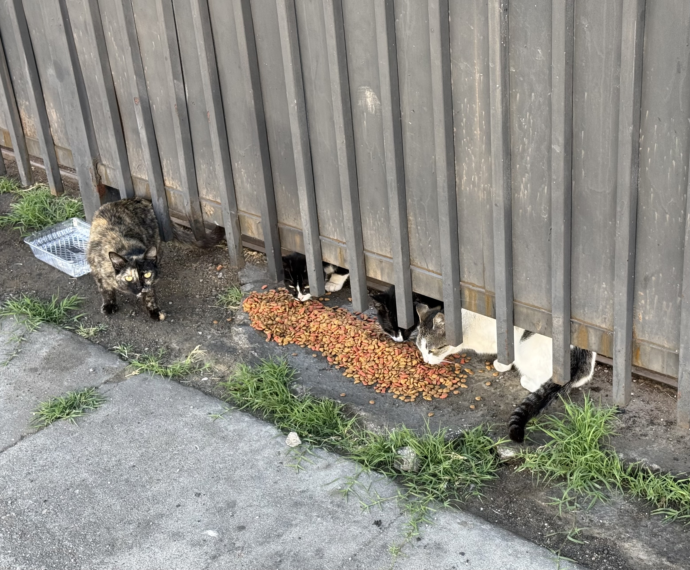

April 23, 2026

Do you ever think of the cats that live outside? Not indoor-outdoor cats, but strays—cats that were abandoned or born on the street. There aren’t many feral cats in Los Angeles. That means most of the cats you see outside were left there like people.
On my way to work, I used to see a group of about four cats who lived in the loading yard of a shipping company. Every morning I would see the big pile of Friskies and water in old plastic cartons put out for them by someone who cared. It was very sweet. I tried to only focus on that, but as you can maybe guess, it wasn’t so easy. At the time, I could only think of the industrial area these cats were living in. Constant traffic from tractor-trailers navigating around poorly-parked cars and garbage piles, to regular automobiles being driven far too fast and with no regard for human life, let alone feline. The last time I saw all four cats was about seven months ago. In the past month, I don’t think I’ve seen them at all. The other morning I noticed there wasn’t the usual large pile of Friskies or the assortment of water cartons.
More recently as I left work, I walked by the decaying corpse of a stray. It looked like she had died in pain. The bones of her jaw and teeth were exposed from decay. Her mouth seemed to be stuck open in one last gasp for air, or maybe one last cry of pain. Not unlike some unnerving or perverse version of a museum exhibit. Her corpse had been there for some time before I saw it. It had probably happened over the weekend. I wondered how long it would be until the sanitation department collected her body. It would end up being there for at least another week.
Passing by it every day became an exercise in psychological trauma. I tried to avoid looking at it, to avoid thinking about it, but that was pointless. As if seeing the dead creature wasn’t enough, I couldn’t help but go down the same line of thinking: How did she die? Was it fast? Slow? Did she try to get away? Could she? Did she die instantly or was it slow and painful? I hated that I asked these questions. It was only hurting me more, making the entire ordeal worse. Why does the mind think on its own volition at times? It was near a stop sign at an intersection, so I assumed it was hit by a car. Of course, my mind couldn’t rest there. Cars drove through the area fast enough to obliterate a small animal. She was intact, but she did look almost… crushed. That made me think a semi-truck rolled over her, the tires trapping and squeezing the life out of her. Even then, I wasn’t sure. I didn’t want to be sure.
It had occurred to me that shortly before I had first seen the dead cat, a very large storm system passed through and dropped a near-record amount of rain across the city. The streets around my work were flooded, and quickly, with little to no drainage. What street drains there are get clogged with trash, creating rivers and ponds of surprisingly deep water. It was at that point I wondered if the cat, sleeping, had been caught in what was basically a flash flood and drowned. How horrifying. But was that better than dying by car or tractor-trailer? I could still imagine her last pained breath.
I don’t always want to think about what happens to the cats. But doesn’t anyone else ever think about them?